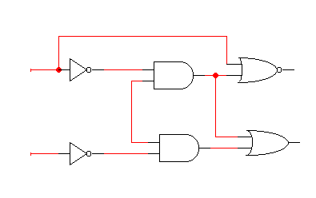
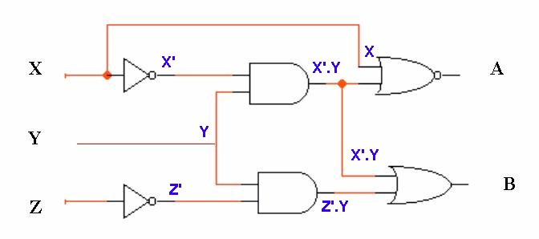
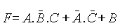
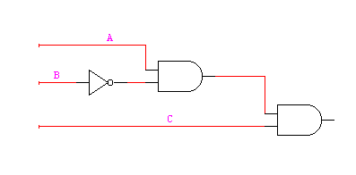
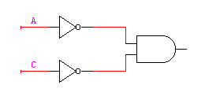
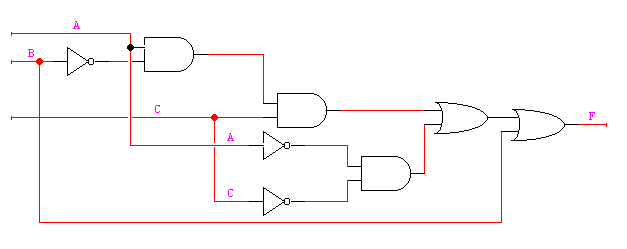
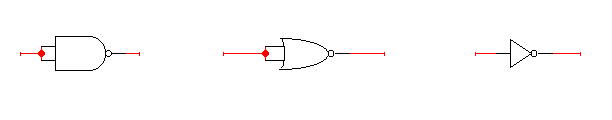
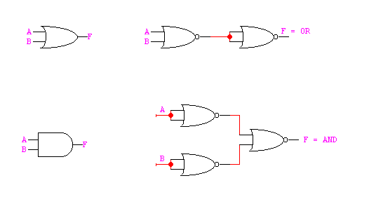

Lógica
Combinacional
Lógica
Combinacional
|
|
|
Síntesis y diseño combinacional
Implantación con compuertas AND, OR, NOT
Implantación con compuertas NAND y NOR
|
|
Un circuito combinacional es aquel que está formado por funciones lógicas elementales ( AND, OR, NAND, NOR, etc. ), que tiene un determinado número de entradas y salidas, dependiendo los valores que toman las salidas exclusivamente de los que toman las entradas en ese instante. Ejemplo de este tipo de circuitos son : los codificadores, decodificadores, multiplexores, demultiplexores, comparadores, generadores-detectores de paridad, etc.
|
|
En este punto se trata el análisis de circuitos combinacionales a nivel de puertas lógicas. La estructura del circuito vendrá dada por su diagrama lógico, cuyos constituyentes serán puertas lógicas cuyo comportamiento lo determina el símbolo que lo representa

ejemplo de un circuito combinacinal
Un circuito combinacional se analiza determinando la salida de los elementos lógicos que lo constituyen ( normalmente puertas lógicas ), partiendo de las variables de entrada y avanzando en el sentido de la señal hacia la salida.

|
|
A continuación se intentan exponer las fases que se siguen en el proceso de síntesis y diseño de circuitos combinacionales :
Definición de la función a realizar y especificación de las entradas y salidas.
Tabla de verdad.
Ecuaciones lógicas de las salidas.
Simplificación de las ecuaciones.
Realización o implementación de las ecuaciones simplificadas mediante compuertas lógicas.
|
|
La implementación con puertas AND, OR y NOT se realiza en el último paso del apartado anterior, sustituyendo las operaciones básicas que aparecen en la expresión lógica de mi circuito digital, de suma lógica, producto lógico y complementación. Estas operaciones se sustituyen por su representación simbólica obteniendo la realización del circuito mediante compuertas lógicas.
Un ejemplo: Una vez realizado un diseño ha obtenido la siguiente función

siendo F la salida del circuito, y A,B,C las entradas.


Ahora solamente queda interconexionar los términos anteriores con la entrada B, mediante sumas ( OR ).Luego el circuito completo queda :

figura 1
|
|
Para implementar circuitos digitales solamente con puertas NAND o NOR debemos conocer como implementar las operaciones básicas AND, OR y NOT, mediante el uso exclusivo de NAND o NOR.

La compuerta NOT se puede obtener o es equivalente mediante NAND o NOR ( se justifica con las tablas de verdad ), conectando ambas entradas.
Si quisiéramos implementar el circuito de la figura 1, por ejemplo, con puertas NOR/NAND sustituiríamos cada puerta AND, OR y NOT por su equivalencia según hemos visto anteriormente, eliminando posteriormente las situaciones redundantes.

Si quisiéramos implementar el circuito de la figura 1, por ejemplo, con puertas NOR/NAND sustituiríamos cada puerta AND, OR y NOT por su equivalencia según hemos visto anteriormente, eliminando posteriormente las situaciones redundantes.
|
Copyright © 2003 Steel E. V. George |